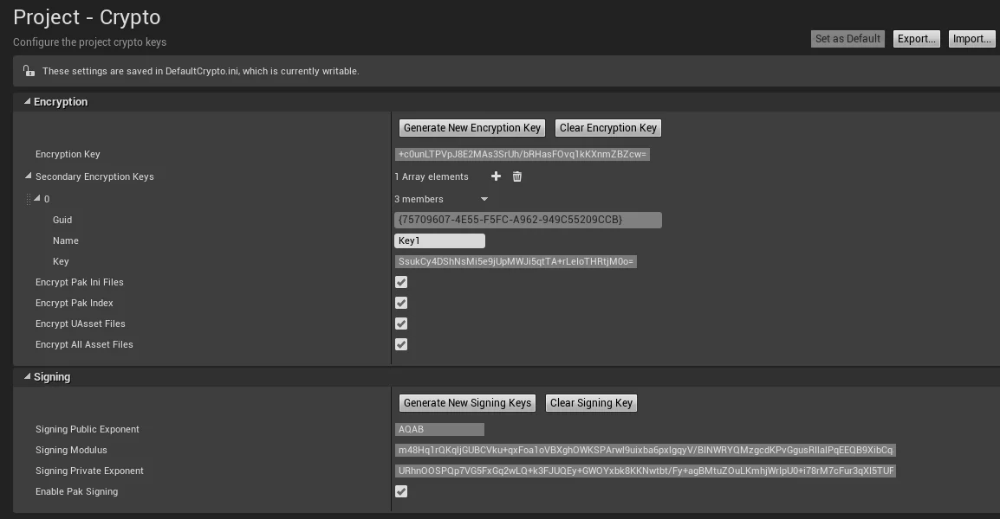
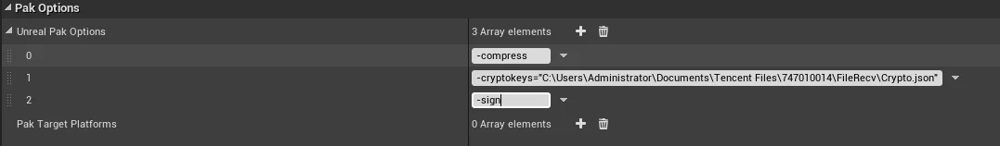
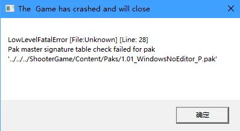
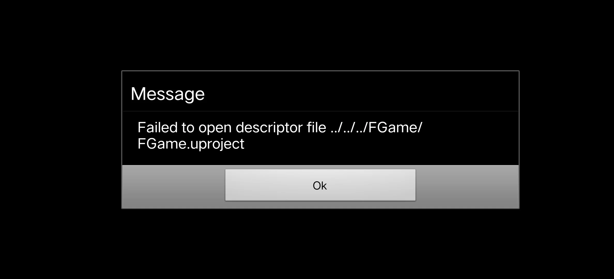
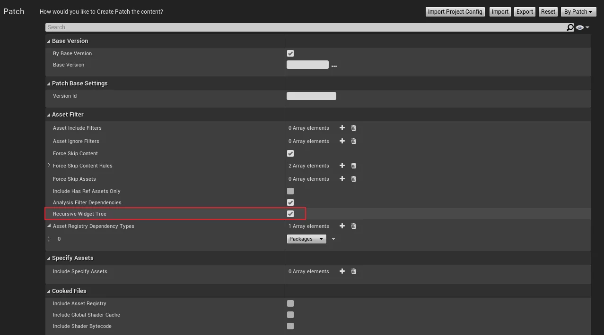

HotPatcher项目开源这一年多以来，经过了不少的更新和优化，也被越来越多的开发者选择作为自己项目的热更新方案，期间有不少人陆陆续续询问UE4热更新相关遇到的问题，很多问题比较常见，重复询问的频率也比较多，所以我准备把一些常见的问题进行整理，方便初步上手UE4热更新方案的人能够尽快地排查问题。
本篇文章会持续更新UE4热更新和HotPatcher相关的Q&A内容，有疑问的地方也可以直接在本篇文章中评论，我会定期统一回答和整理，也可以加入我的UE4热更新群讨论遇到的问题(QQ群958363331)。
HotPatcher相关问题
是否可以用在商业项目中？
可以，使用的是MIT开源协议。是否可以热更C++？
不能，只能用来更新uasset和Non-Asset（lua/db/json等等）。支持移动端热更吗？
支持，本身HotPatcher是没有平台限制的，可以打包和管理UE支持的任意平台。
热更新系列文章
我写的UE4热更新的系列文章，可以作为工程实践的参考：
- UE4热更新：需求分析与方案设计
- UE4资源热更打包工具HotPatcher
- UE4热更新：基于HotPatcher的自动化流程
- 2020 Unreal Open Day
- UE4热更新：拆分基础包
- UE4热更新：资产管理与审计工具
- UE4热更新：Create Shader Patch
- UE4热更新：Questions & Answers
Mount Point的作用
在Mount Pak的时候，有一个参数可以指定MountPoint:
1 | /** |
那么它是干什么的呢？
首先从Mount函数开始：
1 | if (InPath != NULL) |
如果在调用Mount时传递了InPath，则通过加载Pak的FPakFile实例调用SetMountPoint，把InPath设置给它。
其实在FPakFile中，MountPath是有默认值的（从Pak文件中读取），在FPakFile的构造函数中调用了Initialize(Reader, bLoadIndex);，Initialize中又调用了LoadIndex，在LoadIndex中从Pak中读取Pak的Mount Point的逻辑：
1 | // Runtime/PakFile/Private/IPlatformFilePak.cpp |
简单的可以理解为：如果Mount时不传递Mount Point就会从Pak文件中读取，如果有传入就设置为传入的值（Pak文件中的MountPoint是Pak中所有文件的公共路径）。
那么，给Pak设置MountPoint的作用是什么呢？
真实目的是，检测要加载的文件是否存在于当前Pak中！因为Pak的Mount Point的默认含义是当前Pak中所有文件的公共路径，所以只需要检测要读取的文件是否以这个路径开头，就可以首先排除掉基础路径不对的文件（基础路径都不对，意味着这个文件在Pak中也不存在）。
具体逻辑可以看这个函数的实现：
1 | // Runtime/PakFile/Public/IPlatformFilePak.h |
当我们从Pak中读取文件时，通过对游戏中所有Mount的Pak调用Find函数，而FPakFile::Find的函数就实现了上述我说的逻辑：
1 | // Runtime/PakFile/Private/IPlatformFilePak.cpp |
所以，MountPoint的作用就是在从Pak中查找文件时，首先判断文件的路径是否与Pak中所有文件的基础路径相匹配（StartWith），如果不存在也就不会进入后续的流程了。
Pak无法被挂载
在本体包中开启signature后，打包出来的Pak无法被挂载
同样是pak的signature的错误，是因为没有为pak生成对应的.sig文件。
Log中的内容如下:
1 | LogPakFile: Warning: Couldn't find pak signature file '../../../Pak/Content/Paks/1.0.3_WindowsNoEditor_P.pak' |
这是因为打出本体包时Project Setting-Crypto中的bEnablePakSigning被设置成了true，这样对打出来的包里的所有pak都会执行校验，目的就是为了确保只有自己打包的pak才可以被加载。

相关的代码处理在：
1 | // Runtime/PakFile/Private/SignedArchiveReader.cpp |
所以，如果在用HotPatcher打包pak时没有与项目指定相同的加密参数，则导致放入包内的pak会加载失败（因为验证失败了）。
解决的办法就是，在使用HotPatcher时指定与项目相同的加密信息，当直接使用UE打出本体包时，会默认在下列路径中生成一个Crypto.json文件：
1 | PROJECT_DIRECTORY\Saved\Cooked\WindowsNoEditor\PROJECT_NAME\Metadata\Crypto.json |
它里面的内容是根据Project Setting-Crypto中的选项生产的。
使用方法为：
在HotPatcher的UnrealPak参数项添加参数：-cryptokeys="Crypto.json"(在UE4.23+中还需要添加-sign参数):

重新生成Pak就会在Pak的目录里生成与Pak同名的.sig文件了，把pak和sig文件一同拷贝到挂载目录里就可以了。
UnrealPak的参数可以看我之前的一篇文章：UE4工具链配置与开发技巧#UnrealPak的参数
Pak master signature table check failed for pak
- 使用HotPatcher打包出来的pak在挂载时Crash并具有Pak master signature table check failed for pak提示

这是由于打出本体包的时候在项目设置中设置了Signing加密，需要在HotPatcher中的UnrealPak参数中添加相同的加密参数。
在IPlatformFilePak.cpp中的RegisterPakFile中，同样做了判断：
1 | // Runtime/PakFile/Private/ |
iOS热更metallib问题
在4.25存在不会重新加载shaderbytecode的问题，而且引擎内部对加载metallib是单独处理的流程，无法服用usahderbytecode的流程，所以出iOS包尽量使用远程打包的方式，会生成ushaderbytecode，在4.25里LoadLibrary没有问题，但是如果去加载metallib就有问题。
UE热更Shader相关的内容可以看之前的文章：UE4热更新：Create Shader Patch
UE4.25+ ShaderPatch Crash
这是因为在4.25+引擎内部的bug导致的，UE4热更新：Create Shader Patch#4.25+ ShaderPatch Crash](https://imzlp.com/posts/5867/)这篇文章中提供了修改方案。
热更一个不存在的插件中的资源
打包之后引擎是会从upluginmanifest中读取当前工程中具有有哪些插件的，加载插件中的资源先判断插件是否存在，从而实现一个粒度较粗的过滤效果。
所以，当需要把一个在基础包中不存在的插件打包至pak中，需要在打包资源的同时需要把项目的upluginmanifest文件同步打包，挂载点为：
1 | ../../../PROJECT_NAME/Plugins/PROJECT_NAME.upluginmanifest |
关于upluginmanifest的介绍，可以看我之前的笔记：UE4#upluginmanifest。
热更的资源没有效果/材质丢失
如果热更蓝图，逻辑没有变化，需要检查资源是否被Cook，可以手动在Content Browser中通过HotPatcher中提供的功能对选中资源执行Cook，也可以在打包Patch时勾选bCookAsset选项。
如果时热更了资源/材质，没有效果，需要检查是否把Shaderbytecode打包，如果新增材质没有打包shaderbytecode是会导致Shader获取失败使用默认材质的。
Log中的错误：
AssetRegistry是否必须热更
看需求，如果Runtime的代码中有通过AssetRegistry模块获取资源的引用关系、检测资源是否存在，需要热更。但是AssetRegistry并不是引擎必要的，如果肯定不会在运行时用到，可以去掉它，会节省一点内存。
具体介绍可以看我之前的笔记：UE4#控制AssetRegistry的序列化
Android提示not found uproject
UE中有一个BUG，在4.25.1引擎版本中可以复现，步骤如下：
- 安装apk，第一次启动游戏
- 打开UE的沙盒数据目录
UE4Game/PROJECTNAME，在这个目录下创建Content/Paks目录 - 重新启动游戏

Log中也有Project file not found: ../../../FGame/FGame.uproject提示。
在Android上自动挂载的Pak文件可以放到Saved/Paks下，有时间具体分析一下这个问题。
控制资源不打到基础包中
拆分基础包的实践可看我的这两篇文章：
分析某个平台的包中的资源
可以使用UE提供的Asset Audit工具，需要在每次打包时备份好Cooked/PLATFORM/PROJECT_NAME/Metadata目录中的DevelopmentAssetRegistry.bin文件。
也可以使用UnrealPakViewer来直接加载Pak文件。
具体可以看这篇文章的资产审计小节：UE4热更新：资产管理与审计工具#资产审计
UMG子控件热更不生效
如果Instanced的形式引用的UMG，子UMG的变动需要递归包含所有以子控件形式引用的UMG资源。我之前在笔记中记录过这个问题：UE4#UMG的子控件引用热更问题。
解决方案：HotPatcher中具有一个递归分析UMG父控件的的选项(bRecursiveWidgetTree)，开启即可。

这个问题的具体分析在我2020 UOD的演讲中有详细介绍，感兴趣的可以去这里查看视频和PPT：
OTHER UPDATE
使用Github Gist动态管理的更新内容，在国内网络可能会无法查看。